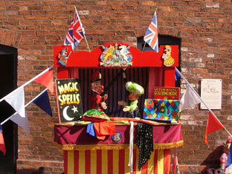

Welcome to my site Mr Punch and Co
My name is Derek and I am pleased to be able to offer you a range of childrens party entertainment to suit age groups from 4 upwards. Parties can of course be performed at a wide range of venues!
My show is very flexible and can fit quite comfortably in to most modern homes, halls and of course outdoor venues without problems!
I Come fully self contained and don't usually require any additional services...!

I have been a member of the "Punch and Judy Fellowship", a group of like minded"Punch and Judy" Professors, for many years and perform a traditional Punch and Judy Show, combined with both Magic and Balloon Modelling. Childrens Parties, Fetes and Garden Parties are my speciality!

Childrens parties usually last approximately an hour and consist if a combination of both Punch and Judy, Magic and Balloon Modelling! At fetes and garden parties I normally perform two shows during the afternoon! Please contact me for further details and bookings.
I normally work within the West Midlands area but will travel by negotiation. I also have public liability insurance up to a value of £2 million.
Please contact me for full details and please feel free to have a look around the rest of my site. I hope you will find it interesting!